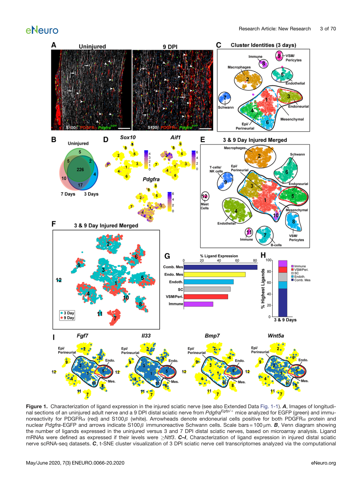
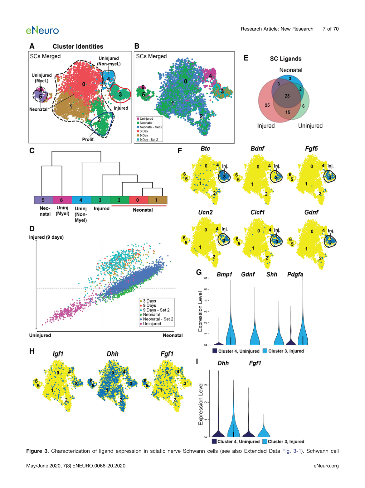
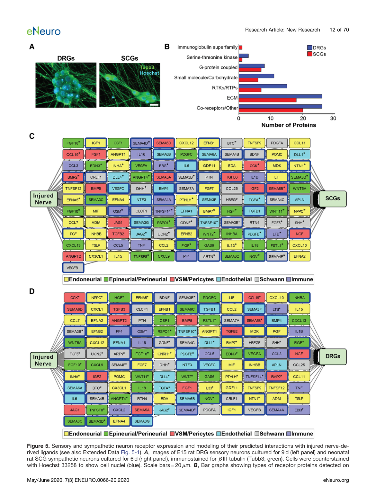
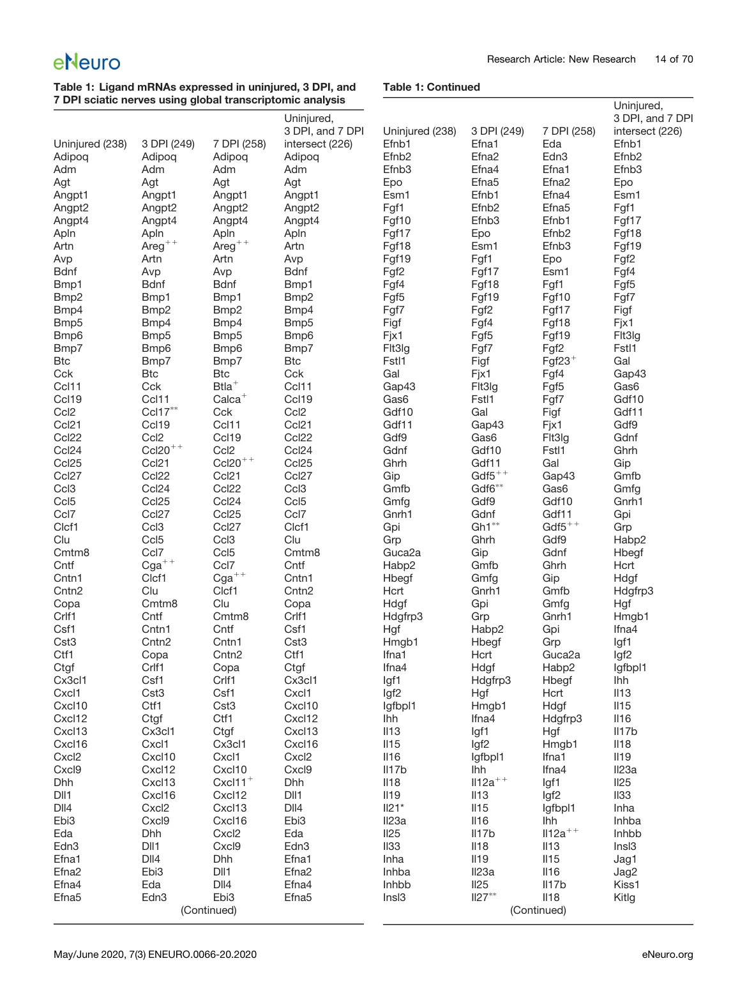
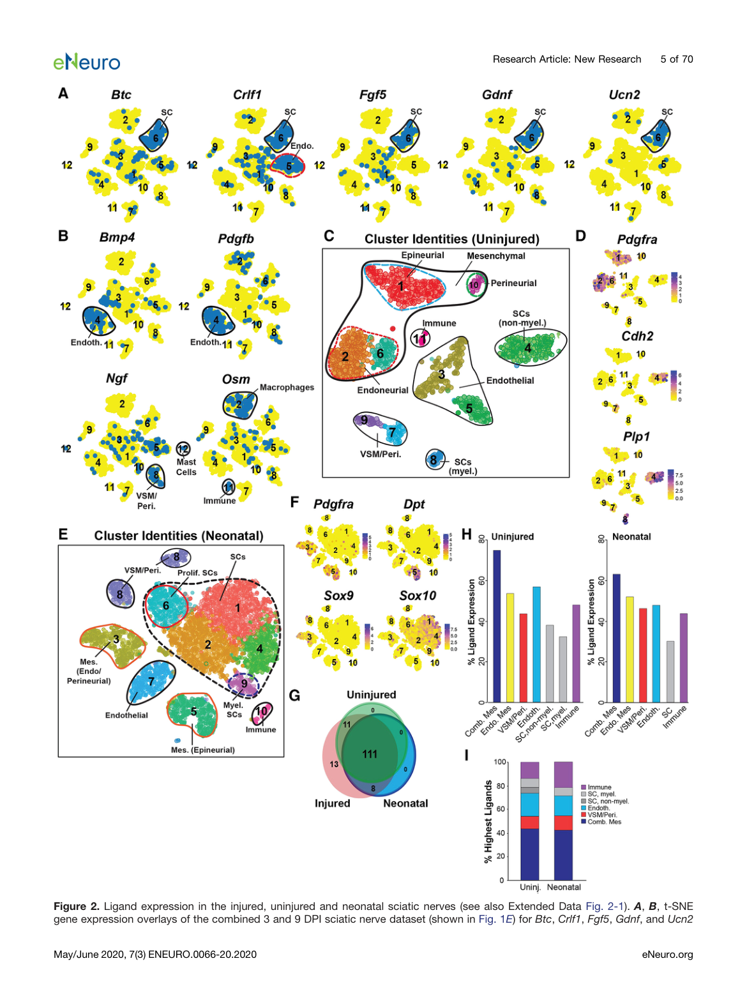
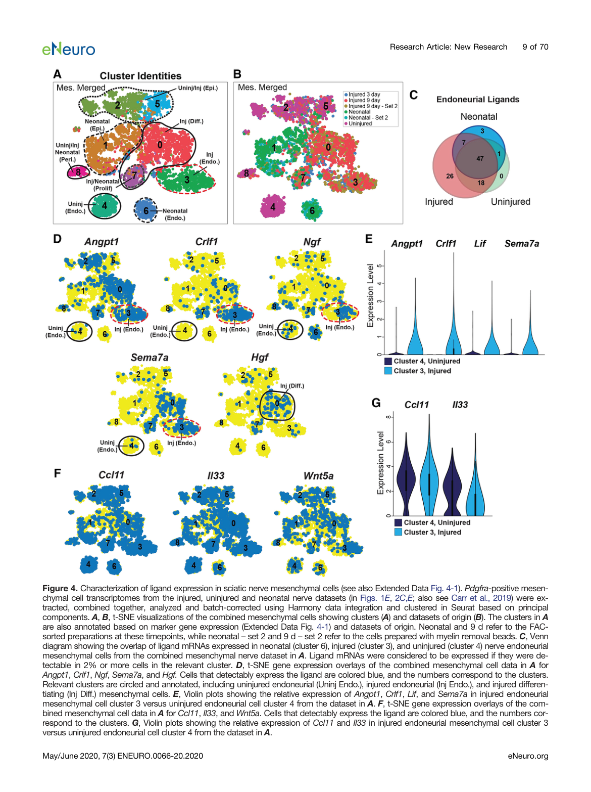

Paracrine Ligand-Receptor Interactions in the Peripheral Nerve Microenvironment Promote Axon Growth
eNeuro, 2020
验证层级：感觉/交感神经元有转录组+蛋白质组双重验证；运动神经元和RGCs仅有转录组数据。
本研究涉及多项核心技术，以下逐一阐述其基本原理：
为什么需要批次校正？
Harmony 算法的核心逻辑（Korsunsky et al., 2019, Nature Methods）
校正效果：

→ 结论：间充质细胞是配体主要来源（82.5%），颠覆传统认知。
通过Drop-seq对损伤后3天和9天的坐骨神经进行测序，鉴定出以下细胞类型：
| 细胞大类 | 具体细胞类型 | 关键标志基因 | 备注 |
|---|---|---|---|
| 神经谱系 | 施万细胞 | Sox10, Ngfr, S100b | 唯一的驻留神经胶质细胞 |
| 间充质谱系 | 神经内膜间充质细胞 | Pdgfra, Etv1, Wif1, Sox9 | 与轴突和施万细胞紧密贴合 |
| 神经外膜间充质细胞 | Pdgfra, Pcolce2, Dpp4, Dpt | 神经最外层结缔组织 | |
| 神经束膜间充质细胞 | Pdgfra, Slc2a1, Casq2, Msln | 包绕神经纤维束 | |
| 神经桥分化细胞 | Pdgfra, Dlk1, Mest | 断端间形成桥梁 | |
| 血管相关 | 内皮细胞 / 平滑肌细胞/周细胞 | Pecam1 / Desmin, Acta2 | 血-神经屏障 / 血管支撑 |
| 免疫细胞 | 巨噬细胞 | Aif1 (Iba1), Cd68 | 清除髓磷脂碎片 |
| 淋巴细胞（T/NK） | Ptprcap, Trbc2 | 免疫监测 | |
| B细胞 | Cd19 | 损伤后9天显著增加 | |
| 肥大细胞 | Cpa3 | 早期炎症反应 |
在上述所有细胞类型中，施万细胞是坐骨神经中唯一的驻留神经胶质细胞。根据功能状态分为三种：
| 亚型 | 特征 | 标志基因 |
|---|---|---|
| 髓磷脂化施万细胞 | 包裹大直径轴突，形成髓磷脂鞘 | Mbp, Pmp22, Plp1 |
| 非髓磷脂化施万细胞 | 包裹小直径轴突（Remak束） | Cdh2, L1cam |
| 修复型施万细胞 | 损伤后去分化形成，分泌大量神经营养因子（Gdnf, Bdnf, Artn），清理轴突碎片 | 损伤诱导表型 |
神经元胞体不在坐骨神经中（轴突无细胞核，Drop-seq无法捕获），因此研究通过独立实验外部引入4种神经元的转录组和蛋白质组数据，作为配体-受体通讯的靶细胞：
注：CA（胞嘧啶阿拉伯糖苷）用于消除培养物中分裂的非神经元细胞，纯化神经元群体。

→ 关键点：修复型施万细胞是施万细胞中配体表达的主力，但仅贡献74/143种配体（51.7%），并非最大来源。
| 工具/方法 | 用途 | 说明 |
|---|---|---|
| Drop-seq | 单细胞RNA测序 | 高通量液滴技术，捕获有核细胞转录组 |
| scran (R) | 数据标准化 | 纠正测序深度差异 |
| Seurat | 降维与聚类 | PCA + t-SNE 可视化，SNN模块化聚类 |
| Harmony | 批次校正 | 消除不同实验/时间点的技术偏差 |
| Cellcellinteractnet | 配体-受体匹配（核心工具） | 自定义Python 2.7.6脚本，将143种配体与神经元受体数据库匹配 |
| Cytoscape 3.7.0 | 网络可视化 | 对预测的旁分泌交互网络进行图形化建模 |
| 细胞表面捕获质谱 | 受体蛋白验证 | Orbitrap Q-Exactive质谱仪，鉴定感觉神经元608种、交感神经元271种表面蛋白 |
仅靠RNA数据无法确认受体蛋白是否真的在细胞膜表面表达，因此研究引入了细胞表面捕获质谱技术：

→ 关键点：RNA数据与蛋白质组学数据相互印证，确认受体蛋白真实存在于神经元表面，为配体-受体通讯模型提供可靠验证。

→ 关键点：施万细胞和间充质细胞分别通过不同的配体-受体通路作用于交感神经元，两者互补而非冗余。
研究鉴定了143种在受损神经中表达的配体，分析其在不同细胞中的来源分布：
| 细胞来源 | 表达配体数（143种中） | 最高表达数 | 典型神经支持因子 |
|---|---|---|---|
| 组合间充质细胞 | 118 (82.5%) | 71 | Angpt1, Ccl11, Fgf7, Hgf, Il33, Wnt5a |
| 施万细胞 | 74 (51.7%) | 23 | Gdnf, Bdnf, Artn, Dhh, Ucn2, Clcf1 |
| 血管内皮细胞 | - | 18 | Bmp4, Pdgfb, Vegfc |
| 周细胞/平滑肌 | - | 15 | Ngf, Bmp2 |
| 免疫细胞 | - | 16 | Osm, Tnf |

→ 结论：无论损伤还是发育状态，间充质细胞都是配体最大贡献者，颠覆传统认知。
| 配体 | 受体 | 来源细胞 | 靶细胞 | 功能验证 |
|---|---|---|---|---|
| ANGPT1 | TEK (Tie2) | 间充质细胞 | 交感神经元 | 局部应用ANGPT1显著增强交感轴突生长 |
| CCL11 (Eotaxin) | CXCR3 | 神经内膜间充质细胞 | 感觉/交感神经元 | 促进轴突生长 |
| VEGFC | FLT4 / NRP1 | 间充质细胞 | 感觉/交感神经元 | 促轴突生长作用体外证实 |

→ 关键点：间充质细胞4个亚型分工明确，神经内膜亚型与轴突最近、配体表达最丰富，是旁分泌支持的主力。
传统认知的主角
被低估的主力
Carr et al. (2020). Paracrine Ligand-Receptor Interactions in the Peripheral Nerve Microenvironment Promote Axon Growth. eNeuro, 7(4), ENEURO.0066-20.2020.
Yuzwa et al. (2016). A manually curated ligand-receptor database for cell-cell communication analysis.